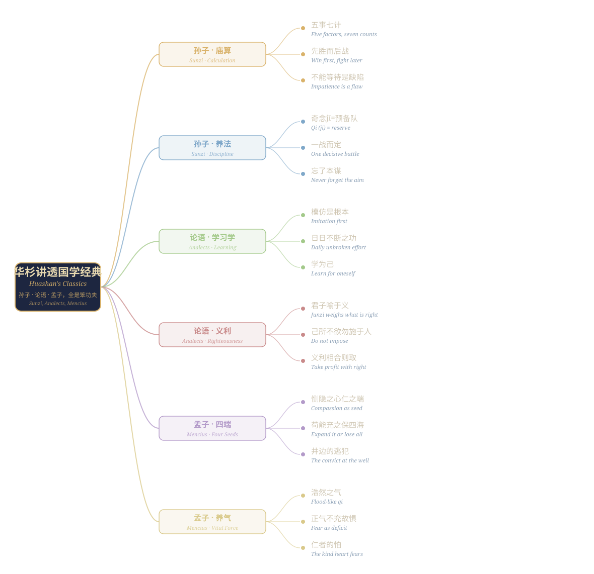

华杉讲透国学经典
〇 · 书籍信息
基本信息
| 书名 | 《华杉讲透国学经典》——合集收录三部：《华杉讲透〈孙子兵法〉》（写了 153 天，一天不落）、《华杉讲透〈论语〉》（407 天）、《华杉讲透〈孟子〉》——作者自称「华杉同学讲透朱熹、张居正、王阳明、焦循四位老师讲经典」 |
|---|---|
| 作者 | 华杉：华与华营销咨询创始人——白天经营公司，每天清晨 5:30–7:30 写两小时，「日日不断之功」既是他的写作方法，也是他讲解的主题本身 |
| 结构 | 孙子兵法 13 篇（原文 + 华杉详解 + 战例）→ 论语 20 章（以张居正「直解」为主本）→ 孟子 14 篇（四端、浩然之气、王道）——三部书共享同一个方法论：忠实整理先贤，不妄自点评 |
| 体裁 | 当代注解经典的白话讲透本：最大特色是把古代智慧翻译成今天的经营与人生决策语言——兵法讲成战略学，论语讲成学习学，孟子讲成心性学 |
| 一句话 | 三本书其实是同一本：胜利靠基本面（五事七计），成长靠模仿与坚持（学而时习之），善靠扩充四端（苟能充之，足以保四海）——中国智慧的全部秘密都是笨功夫。 |
一 · 核心主题总览
三部经典在华杉手里被讲成一件事：① 赢了再打
「孙子兵法不是战法，是不战之法……是先胜而后战之法。」「计」是计算不是诡计：五事七计算的是基本面——「三十六计技术含量很低，但一听就让人兴奋；五事七计技术含量很高，但一听就让人打瞌睡」——人性的耳朵只爱听诡计，兵法的全部智慧偏偏都在让人打瞌睡的地方。
② 等待是战斗的一部分
「不能等待，是巨大的性格缺陷。」「一战而定是真名将：百战百胜，那是打了一百次胜仗了，还没解决问题」——兵法的胜负观与投资观完全同构：少出手、出手必中、出手之前先算赢。
③ 学习是模仿
论语开篇第一句被讲成儒家「学习学」的总纲：「模仿是学习的根本，因为模仿是行动，不是空谈，是照着去做。」修身齐家治国平天下的社会学原理：只要我做好自己，别人自然会模仿我——从一家模仿到一国模仿，这就是王天下。
④ 善是可以扩充的
孟子的四端论：「恻隐之心，仁之端也；羞恶之心，义之端也……」「凡有四端于我者，苟能充之，足以保四海；苟不充之，不足以事父母」——善不是道德要求，是每个人出厂自带的种子，长不长全看养。
二 · 第一段 孙子 · 计篇 —— 基本面工程—— 五事七计 · 打瞌睡的真功夫 ——
五事七计不是三十六计
华杉对《计篇》的翻案是全书最著名的一击：「孙子的『计』，是基本面，不是操作面。是最拙的，不是最巧的。」诸葛亮在五事七计上「哪一条 SWOT 分析能胜过魏国」却六出祁山——「他要做的事，是唯有冒险，以侥幸才能成功的事，偏他又是天下第一谨慎之人，不打无把握之仗，一看不行就撤兵。那当初又何必发兵呢？」——锋利处在于把「奋斗叙事」逼回「庙算逻辑」：没有胜算的坚持，叫劳民伤财。
◆ 语言学习 · 概念 · 庙算
| 五事 | 道、天、地、将、法——实力的五个基本面科目 |
|---|---|
| 七计 | 主孰有道？将孰有能？天地孰得？法令孰行？兵众孰强？士卒孰练？赏罚孰明？ |
| 庙算 | 开战前的计算——「胜了才打，没有胜算就不打，就韬光养晦」 |
| 十二诡道 | 能而示之不能等十二招——孙子承认诡道存在，但把它放在基本面之后 |
句型 ｜ 「三十六计技术含量很低，但一听就让人兴奋；『五事七计』技术含量很高，但一听就让人打瞌睡。」——对仗句完成价值观排序：兴奋是听众的偏好，瞌睡是胜利的成本。
不能等待与一战而定
两条相邻的训诫构成兵法的性格论：「不能等待，是巨大的性格缺陷。总觉得要战斗才是英雄男子汉，不懂得等待是战斗的一部分，而且是非常重要的组成部分」；「一战而定是真名将。百战百胜，那是打了一百次胜仗了，还没解决问题，还要接着打！那要胜仗来干什么呢？」——「再说世间哪有百战百胜这回事，那是把败仗藏起来不说」。等待考验性格，收束考验智慧：打得多的不是名将，打得少而解决问题才是。
◆ 语言学习 · 概念 · 胜负观
| 先胜后战 | 赢了再打：庙算有胜算才兴师动众——兵法的次序观 |
|---|---|
| 一战而定 | 以最小战斗次数解决问题——名将的定义式 |
| 韬光养晦 | 没胜算时的正确动作：继续准备五事七计 |
| 败仗藏起来 | 对「百战百胜」神话的祛魅——幸存者偏差的古代版 |
习语 ｜ 「不能等待，是巨大的性格缺陷。」——九个字的性格诊断书：把急躁归档为缺陷而非热血，是全书对现代人最有用的一句话。
三 · 第二段 孙子 · 养法 —— 被误读的三个词—— 念 jī 的奇 · 知己 · 本谋 ——
以正合，以奇胜（念 jī）
「《孙子兵法》里被误读最多的一句话」：奇不念 qí，念 jī——数学里奇偶的奇，又称「余奇」：「简单地说，就是预备队」——正兵先打，主帅在指挥所观察，等到关键时候投入预备队，「制胜」，解决战斗。华杉顺手拆掉第二个误会：李愬雪夜袭蔡州式的奇袭「三千年就那几回，这不是《孙子兵法》的价值观」，「被人们误读为奇袭得胜，还是贪巧求速的心理作怪」——三个被误读的词（计、知彼、奇胜）共享同一个病根：想快、想巧、想不劳而获。
◆ 语言学习 · 概念 · 分战法
| 余奇 | jī：多出来的部分——预备队的古称 |
|---|---|
| 以正合 | 正兵合战：明面阵地上的主力对决 |
| 以奇胜 | 关键时点投入预备队决胜——不是奇袭，是排兵布阵 |
| 贪巧求速 | 三个误读的共同病因：华杉给人性下的诊断 |
句型 ｜ 「奇正相生，如循环之无端，孰能穷之？」——孙子原文的循环句式：正与奇不是两种打法，是一支部队的两种状态——互相转化，无穷无尽。
知己与忘了本谋
「知己知彼，百战不殆」被华杉倒转重心：「人人都想去知彼，不知道主要问题是不知己」——知彼的功夫有限，知己的功夫无限：你的资源、能力、意志，才是决策的全部变量。另一条戒律出自军争：「忘了本谋，这是我们每个人常犯的毛病——不仅仅是因为愤怒，任何的干扰都会令我们越来越远离本质的目的，而自己完全意识不到，追求枝节，而忘了本质」。司马懿的「本谋意识」是正面样本：始终不忘自己的根本目的、基本策略——情绪与干扰都夺不走的那种清醒。
◆ 语言学习 · 概念 · 本谋意识
| 知己为先 | 决策的主要问题是不知己——兵法的注意力分配 |
|---|---|
| 本谋 | 根本目的与基本策略——所有行动的总开关 |
| 干扰清单 | 愤怒、诱惑、枝节——让本谋失焦的三类噪音 |
| 治气 | 关注士卒心理状态——孙子兵法里的士气管理学 |
习语 ｜ 「忘了本谋，是每个人常犯的毛病。」——一句话管住开会跑题、创业跟风、吵架升级：随时问自己一句「我来到底是干什么的」，兵法就归你了。
四 · 第三段 论语 —— 学习学与义利之辨—— 模仿 · 日日不断 · 喻于义 ——
模仿是学习的根本
「学《论语》，要怎么学」是开篇第一章的先导问答。华杉给「学而时习之」的现代注脚：「学到的时候其实不知道，一定是练习过了，实践过了，体会到了，才真知道了，才不亦乐乎！」——模仿定律是整个儒家思想的根基：「模仿是行动，不是空谈，是照着去做」；修身齐家治国平天下，一切在于修身——只要我做好自己，别人自然会模仿我。方法论落点是他自己的写作实践：「做学问一定要有日日不断之功」——每天做每天的，不可补课，不可预支，出差住旅馆也要完成。
◆ 语言学习 · 概念 · 儒家学习学
| 学习为己 | 为自己学（修身）vs 为别人学（教人）——差距不知不觉拉开 |
|---|---|
| 模仿三定律 | 我做好自己 → 家人模仿 → 天下模仿——王天下的社会学 |
| 日日不断之功 | 曾国藩心法：每天做每天的功课，不可间断 |
| 知行合一 | 学到手上脚上去——知识必须落到动作 |
句型 ｜ 「世间的道理，都特别简单朴实，成功都是积累得来，要学正学，走正道。天道酬勤，日日不断之功，胜过一切奇谋巧计。」——论语篇与孙子篇在此处合流：兵法的五事七计与儒家的日日不断，是同一种笨功夫的两个名字。
君子喻于义
「君子喻于义，小人喻于利」被华杉从道德训诫翻成心理工具：「喻」是知晓、明白——君子做事必辨是非，合于义就做，不合于义就不做；有义有利，则取；不义之财，不取——义利之辨不是要利不要义，「若是被解成君子就不要利，只要义，那便成了伪君子」。义的「利」在哪里？「君子喻于义，就不会为利所迷惑，也不会迷失方向，专注坚持于自己的使命」「安心做事，接受结果，这是君子喻于义，对自己心理健康的最大价值」。
◆ 语言学习 · 概念 · 义利之辨
| 喻 | 知晓、明白——义利之辨是判断力的练习，不是站队 |
|---|---|
| 义利相合 | 有义有利则取——儒家并不反利，反不义之财 |
| 伪君子陷阱 | 把义利对立的解读——道德形式主义的病根 |
| 不义不取 | 唯一的硬杠杠——判断标准从「有没有利」换成「合不合义」 |
习语 ｜ 「己所不欲，勿施于人。」——孔子对「恕」的定义被原样保留：八个字的心理边界工具，两千五百年没有改版。
五 · 第四段 孟子 —— 心性与王道—— 四端 · 浩然之气 · 恻隐 ——
四端论
孟子的人性论起点：「恻隐之心，仁之端也；羞恶之心，义之端也；辞让之心，礼之端也；是非之心，智之端也。」华杉用最锋利的例证讲解：逃犯路过井边，看见小孩要掉下去，「一定心里一惊，不假思索，赶紧出手一把把孩子拉开」——不为名声、不为交情，出自本性——这就是恻隐之心，就是良知。结论是扩充论：「凡有四端于我者，苟能充之，足以保四海；苟不充之，不足以事父母」——善与恶的分岔不在有无四端，在充与不充。
◆ 语言学习 · 概念 · 性善论
| 四端 | 恻隐 · 羞恶 · 辞让 · 是非——仁义礼智的四颗种子 |
|---|---|
| 仁之端 | 端 = 发端：善是起点不是成品——道德是养成不是天赐 |
| 扩充 | 存养并放大四端——孟子给每个人留的修行入口 |
| 良知 | 不假思索的善反应——王阳明心学的先声 |
句型 ｜ 「苟能充之，足以保四海；苟不充之，不足以事父母。」——双条件句的对仗：同一颗种子，充之与不充之，隔着保四海与侍父母的天壤。
浩然之气与仁者的怕
孟子心法的另一面是养气：张居正注「人之不免于恐惧者，在于正气不充，道义不足」——勇者善养正气，「至大至刚，浩然塞于天地之间」，故能执守坚定、不可屈挠。华杉又给「仁者无敌」补了一个惊人注脚：仁者什么都怕！狂风暴雨之夜，仁者先想到的是「别人家恐怕有问题」——「一想到这儿，恻隐之心，担忧之情，油然而生」；什么都不怕的，他关注的只是自己——「仁者先天下之忧而忧」，怕，是因为心里装着别人。
◆ 语言学习 · 概念 · 心性修养
| 浩然之气 | 至大至刚、充塞天地的正气——恐惧的解药是道义储备 |
|---|---|
| 正气不充 | 张居正对恐惧的病理学：怕，是因为道义不足 |
| 仁者的怕 | 什么都怕与什么都不怕的对照——怕是牵挂的证据 |
| 先忧后乐 | 范仲淹语被华杉借来注孟子——儒家情感的公共性 |
习语 ｜ 「仁者先天下之忧而忧，后天下之乐而乐，他什么都怕！」——把胆小翻案为深情：无惧与无良只隔一线——全书以「怕」字为孟子收束，落点极轻，分量极重。
六 · 人物图鉴与成长弧线—— 主角配角 · 一张表看穿 ——
主要人物
华杉——注解者与方法论示范者：白天经营咨询公司，清晨 5:30–7:30 写作，153 天写完孙子、407 天写完论语——他把自己活成了注解的一部分：书里讲的所有道理，作者用日程表做了实证
孙子——《孙子兵法》作者：全书第一主角——在华杉笔下从「诡道之神」还原为「基本面之父」
孔子——论语的主角：被讲成「学习学」与「心理边界学」的祖师——模仿、练习、恕道
孟子——心性论的主角：四端论与浩然之气——善是种子，气是土壤：中国哲学最乐观的人性设计
次要人物（功能位）
| 张居正 | 《论语》注解的主本来源：「超越皇帝的宰相，是帝国的实际执政者」——「说修身齐家治国平天下，朱熹甚至孔子都没平过天下。张居正平过，所以他的讲解，是最透彻的」 |
|---|---|
| 诸葛亮 | 反面教材：天下第一谨慎之人，做的却是「唯有冒险，以侥幸才能成功的事」——华杉用他完成了对奋斗叙事的兵法审计 |
| 司马懿 | 正面样本：「很强的『本谋意识』，始终不忘自己的根本目的、基本策略」——不被愤怒与干扰带走的清醒者 |
| 曾国藩 | 日日不断之功的出处：华杉写作方法的师承——「每天做每天的，一天不落」 |
七 · 主题与象征—— 每个道具都在说话 ——
| 庙算 ↔ 基本面 | 五事七计——打瞌睡的科目才是胜负的科目 |
|---|---|
| 余奇 ↔ 预备队 | 念 jī 的奇——手里捏着没打出去的牌，是力量的真正形状 |
| 模仿 ↔ 王天下 | 修身的传播链——做好自己是最古老的营销学 |
| 日日不断 ↔ 笨功夫 | 华杉的清晨两小时——方法与内容同构：书怎么写出来的，就是书要讲的 |
| 四端 ↔ 种子 | 恻隐之心仁之端——善不是成就，是库存：充与不充决定长势 |
八 · 写作手法赏析—— 怎么写，就能怎么学 ——
① 集注法
忠实整理朱熹、张居正、王阳明、焦循——「不妄自点评，不擅自添加」的克制成全了讲透的野心
② 翻译成经营语言
兵法讲成战略学、论语讲成学习学——经典被嫁接到现代决策树上，古文落地为动作
③ 战例佐餐
孙子部分每训必配战例——李愬雪夜、长平秦军：抽象原则全部落到具体战役
④ 自证式写作
日日不断之功既是讲解又是实践——读者可以先验作者，再验内容
九 · 名段欣赏—— 原文精读 · 逐段赏析 ——
十 · 金句摘录—— 14 条 · 中英对照 · 带出处 ——
"孙子兵法不是战法，是不战之法；不是战胜之法，是不战而胜之法；不是战而后胜之法，是先胜而后战之法。"—— 孙子 · 计篇
"不能等待，是巨大的性格缺陷。总觉得要战斗才是英雄男子汉，不懂得等待是战斗的一部分，而且是非常重要的组成部分。"—— 孙子 · 计篇
"一战而定是真名将。百战百胜，那是打了一百次胜仗了，还没解决问题，还要接着打！"—— 孙子 · 计篇
"忘了本谋，这是我们每个人常犯的毛病。"—— 孙子 · 计篇
"「以正合，以奇胜」，是《孙子兵法》里被误读最多的一句话。最大的误读，就是以奇胜的「奇」，不念qí，念jī……简单地说，就是预备队。"—— 孙子 · 势篇
"我们经营也是一样，你踏踏实实把产品，把服务做好，别老想着有什么「招」。"—— 孙子 · 计篇
"三十六计技术含量很低，但一听就让人兴奋；「五事七计」技术含量很高，但一听就让人打瞌睡。"—— 孙子 · 计篇
"天道酬勤，日日不断之功，胜过一切奇谋巧计。"—— 论语 · 序言方法
"模仿，是学习的根本，因为模仿是行动，不是空谈，是照着去做。"—— 论语 · 学而第一
"一定是练习过了，实践过了，体会到了，才真知道了，才不亦乐乎！"—— 论语 · 学而第一
"己所不欲，勿施于人。"—— 论语 · 原文
"君子喻于义，君子做事，必辨其是非，合于义就做，不合于义就不做。"—— 论语 · 里仁
"恻隐之心，仁之端也；羞恶之心，义之端也；辞让之心，礼之端也；是非之心，智之端也。"—— 孟子 · 公孙丑上
"凡有四端于我者，苟能充之，足以保四海；苟不充之，不足以事父母。"—— 孟子 · 公孙丑上
十一 · 拓展阅读—— 原文 · 词条 · 译文 ——
十二 · 个人感悟与心得—— 三点心得 ——
三点感悟
① 真功夫都让人打瞌睡
三十六计让人兴奋、五事七计让人打瞌睡——这个对照适用于一切领域：让人兴奋的通常是技巧，让人瞌睡的通常是基本面；投资、经营、学习，钱和成绩都藏在打瞌睡的部分。
② 方法即内容
华杉用 153 天和 407 天的日日不断之功写完两部书——他讲的每个道理都先被自己的日程表验证过一遍。读注解书的一个隐藏福利：作者本人就是第一份案例。
③ 善是库存不是成就
四端论的实践意义：不用要求自己「变成好人」，只要求自己「别堵住四端」——恻隐之心人人自带，要做的只是养与扩。井边的逃犯比任何道德说教都有说服力：善在动机缺席时依然在场。
三部经典、一种读法：兵法教你在赢之前不行动，论语教你在懂之前先照做，孟子教你在坏之前先护住那颗种子——中国智慧的底色，全部是笨功夫。
十三 · 一页速查（复习用）
| 三部合一 | 孙子兵法（153 天）· 论语（407 天）· 孟子——「中国智慧讲透系列」合集 |
|---|---|
| 五事七计 | 计是计算不是诡计：庙算赢了再打——诸葛亮因无胜算被审计 |
| 三个误读 | 计、知彼、奇胜（念 jī，预备队）——病根同为贪巧求速 |
| 学习学 | 模仿是根本 + 日日不断之功 + 学为己：论语被讲成练习手册 |
| 四端论 | 恻隐仁之端，苟能充之足以保四海——善是自带种子，养与不养是全部分岔 |
十四 · 全书思维导图—— 一图纵览 ——

一图纵览全书骨架 · 中英双语对照 · 手机端可左右滑动查看全图